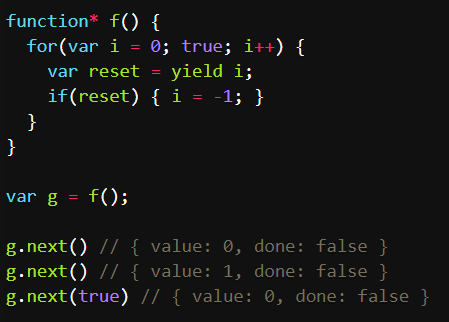
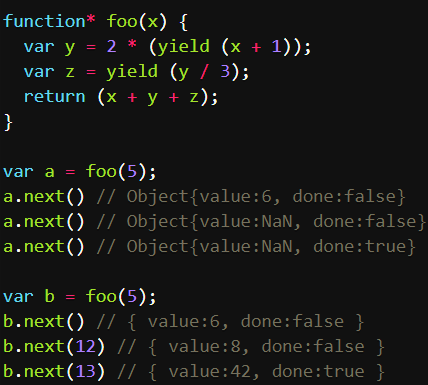

#next方法
#：yield本身没有返回值，或者说总是返回undefined。
next方法可以带一个参数，该参数就会被当做上一个yield表达式的返回值。

这里的Generator函数是一个可以无限循环的函数，如果next方法没有设置参数的话每次运行到yield表达式，变量reset的值总是undefined。当next方法带一个参数true时，变量reset就会被重置为这个参数，因此会等于 - 1，下一轮循环开始从 - 1开始递增。
这个功能有重要的语法意义。Generator函数从暂停状态到恢复运行，它的上下文状态是不改变的。通过next方法的啊参数，既有办法在Generator函数开始运行之后，继续向函数内部注入值。

上面代码中，第二次运行next方法的时候不带参数，导致 y 的值等于2 * undefined（即NaN），除以 3 以后还是NaN，因此返回对象的value属性也等于NaN。第三次运行Next方法的时候不带参数，所以z等于undefined，返回对象的value属性等于5 + NaN + undefined，即NaN。
如果向next方法提供参数，返回结果就完全不一样了。上面代码第一次调用b的next方法时，返回x + 1的值6；第二次调用next方法，将上一次yield表达式的值设为12，因此y等于24，返回y / 3的值8；第三次调用next方法，将上一次yield表达式的值设为13，因此z等于13，这时x等于5，y等于24，所以return语句的值等于42。
注意，由于next方法的参数表示上一个yield表达式的返回值，所以在第一次使用next方法时，传递参数是无效的。V8 引擎直接忽略第一次使用next方法时的参数，只有从第二次使用next方法开始，参数才是有效的。从语义上讲，第一个next方法用来启动遍历器对象，所以不用带有参数。
#for...of循环
for...of循环可自动遍历Generator函数生成时的Iterator对象，且此时不再需要调用next方法。